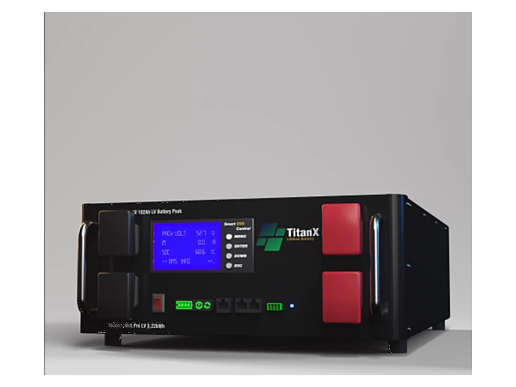
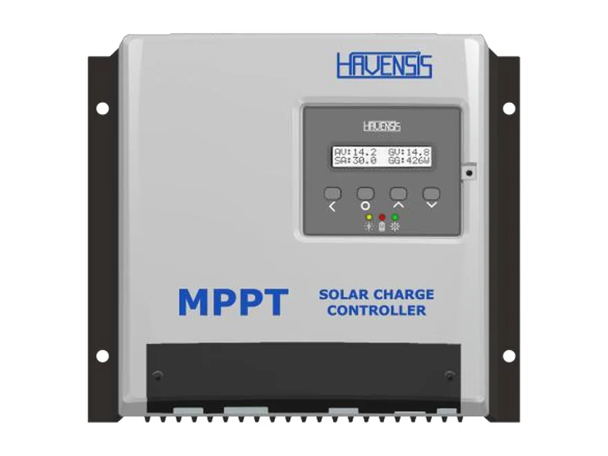
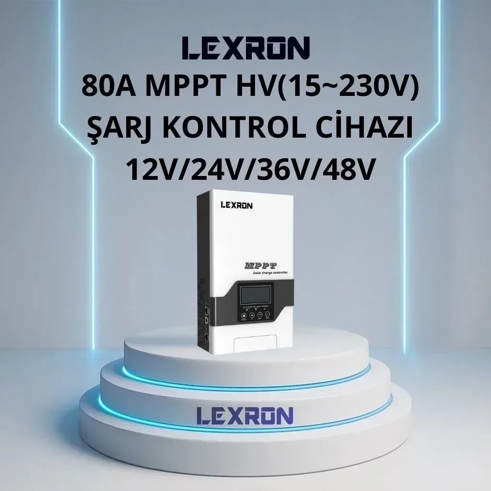
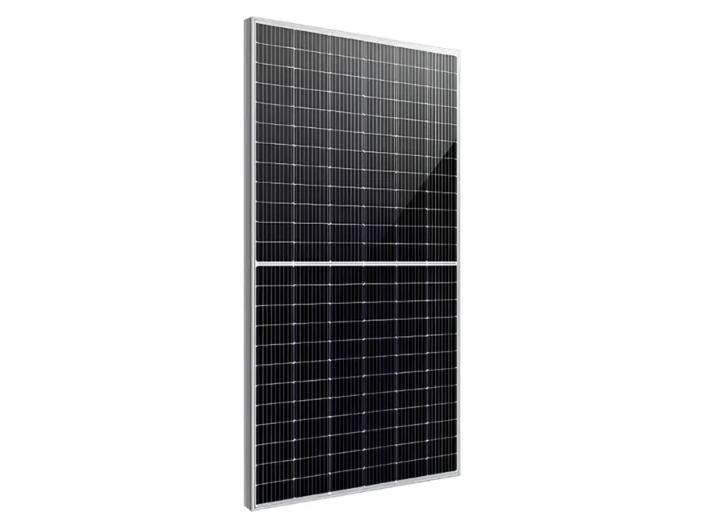
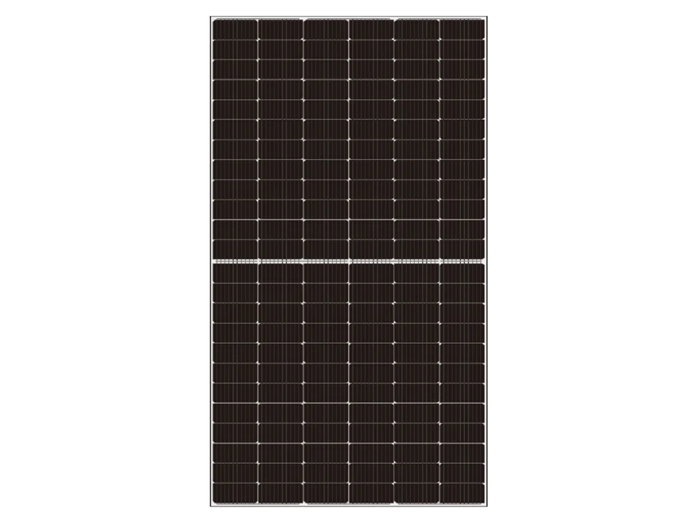

Ev enerji depolama
Gündüz üretilen güneş enerjisini akşam kullanmak için.

51,2 V 102 Ah LiFePO₄ akü: ev ve iş yerinde güneş enerjisini depolar, kesintide yedek güç sağlar. 16 adede kadar paralel bağlanarak büyütülebilir.
₺73.400 ≈ $1.491
KDV dahil fiyattır.
💰 Havale/EFT ile: ₺71.200
💳 Kredi kartına taksit — ödeme sayfasında seçilir
🚚 Kargo alıcı ödemeli — teslimatta kargo firmasına ödenir · 2–5 iş günü
51,2 V 102 Ah (5,22 kWh) LiFePO₄ enerji depolama aküsü. 16S1P prizmatik hücre yapısı, dahili akıllı BMS ile aşırı şarj/deşarj, aşırı akım, kısa devre ve sıcaklık koruması. 100 A sürekli deşarj, 150 A tepe (5 sn); 6000+ çevrim ömrü (%80 DoD). CAN/RS485 ve Bluetooth veya WiFi haberleşme; 16 adede kadar paralel bağlanabilir. Ağırlık 37 kg, ölçü 560 × 150 × 380 mm, IP20, M8 terminal, 2 yıl garanti.
LiFePO₄ (lityum demir fosfat) kimyası uzun çevrim ömrü ve yüksek güvenlik sunar; dahili BMS hücreleri dengeler ve aküyü aşırı şarj, aşırı deşarj, aşırı akım, kısa devre ve sıcaklığa karşı korur.
| Marka | TitanX |
| Nominal gerilim | 51,2 V |
| Kapasite | 102 Ah |
| Enerji | 5,22 kWh |
| Kimya / hücre | LiFePO₄ · 16S1P prizmatik |
| Maks. şarj gerilimi | 58,4 V |
| Deşarj kesme gerilimi | 40 V |
| Sürekli / tepe deşarj | 100 A / 150 A (5 sn) |
| Maks. şarj akımı | 100 A |
| Çevrim ömrü | 6000+ (%80 DoD, 25 °C) |
| BMS | Dahili akıllı BMS |
| Haberleşme | CAN / RS485 · Bluetooth veya WiFi |
| Paralel bağlantı | 16 adede kadar |
| Çalışma sıcaklığı | Şarj 0~50 °C · deşarj −20~60 °C |
| Ölçü | 560 × 150 × 380 mm |
| Ağırlık | 37 kg |
| Koruma sınıfı / terminal | IP20 · M8 terminal |
| Garanti | 2 yıl |
Değerler ürünün teknik bilgi sayfasından alınmıştır. Listede olmayan bir değer için bize yazın.
LiFePO₄, BMS ve DoD nedir? GES Sözlüğü →
Güneş sisteminin enerjisini depolar, ihtiyaç anında geri verir.
Gündüz üretilen güneş enerjisini akşam kullanmak için.
Kesintide kesintisiz güç ve yedek enerji.
Şebekenin olmadığı bağ evi, çiftlik ve tesis.
48 V sistemli karavan, tekne ve iş makineleri.
Akü, şarj kontrol cihazı ya da hibrit inverter üzerinden şarj olur; inverter yükleri doğrudan aküden besler.
Kuru, havadar ve kapalı bir alana, inverterin yakınına yerleştirin.
M8 terminallere uygun kesitte kablo ve sigorta ile inverteri bağlayın; kutupları kontrol edin.
İnverterde akü tipini LiFePO₄ seçin, 58,4 V / 40 V sınırlarını girin; destekliyorsa CAN / RS485 haberleşmesini bağlayın.
Aynı siparişte alın; hepsi aynı kargoyla gelsin.

150 V panel girişli MPPT; 48 V'a kadar akü.
₺16.200Ürünü İncele →
12–48 V akülerle 80 A MPPT.
₺10.100Ürünü İncele →
Büyük sistemler için yüksek güçlü panel.
₺10.000Ürünü İncele →
Büyük sistemler için yüksek güçlü panel.
₺10.000Ürünü İncele →48 V akü girişli inverterlerle çalışır. CAN / RS485 haberleşmesi olan inverterlerde akü bilgisi inverterle paylaşılır; inverterinizin modelini bize yazın, uyumu sipariş öncesi kontrol edelim.
Evet, 16 adede kadar paralel bağlanabilir. Her akü 5,22 kWh eklediği için örneğin 2 akü yaklaşık 10,4 kWh, 4 akü yaklaşık 20,9 kWh depolar.
Maksimum şarj gerilimi 58,4 V, deşarj kesme gerilimi 40 V, maksimum şarj akımı 100 A'dir. Şarj kontrol cihazınızı ya da inverterinizi bu değerlerin içinde kalacak şekilde ayarlayın.
Kuru, havadar ve kapalı bir yere yerleştirin; koruma sınıfı IP20'dir, açık havaya uygun değildir. Şarj 0~50 °C aralığında yapılmalıdır.
Türkiye'nin her yerine kargo ile gönderiyoruz. Antalya bölgesinde isteğe bağlı yerinde kurulum yapıyoruz; diğer illerde bağlantıyı telefonla birlikte planlıyoruz.
Kaç akü, hangi panel ve inverter gerektiğini Sistem Kurucu ile birkaç adımda görün.
Bu ürün için henüz yayınlanmış yorum yok. Satın aldıysanız deneyiminizi yazın; onaydan sonra burada yayınlanır.
Stok ve teslimat için WhatsApp'tan yazın; aynı gün dönüş yapıyoruz.